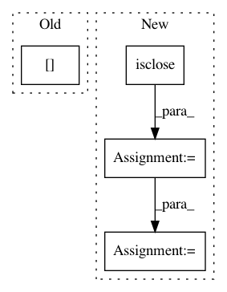

5b58ab5c45be8923e5d74e3bc84101be1ad13066,Orange/widgets/unsupervised/owmds.py,OWMDS,_setup_plot,#OWMDS#,749
Before Change
item = QGraphicsLineItem(
emb_x[self._similar_pairs][i * 2],
emb_y[self._similar_pairs][i * 2],
emb_x[self._similar_pairs][i * 2 + 1],
emb_y[self._similar_pairs][i * 2 + 1]
)
if item.line().isNull():
After Change
// Null (zero length) line causes bad rendering artifacts
// in Qt when using the raster graphics system (see gh-issue: 1668).
(x1, x2), (y1, y2) = (emb_x_pairs.T, emb_y_pairs.T)
pairs_mask = ~(numpy.isclose(x1, x2) & numpy.isclose(y1, y2))
emb_x_pairs = emb_x_pairs[pairs_mask, :]
emb_y_pairs = emb_y_pairs[pairs_mask, :]
curve = pg.PlotCurveItem(
emb_x_pairs.ravel(), emb_y_pairs.ravel(),
pen=pg.mkPen(0.8, width=2, cosmetic=True),
connect="pairs", antialias=True)
self.plot.addItem(curve)
data = numpy.arange(size)
self._scatter_item = item = ScatterPlotItem(
In pattern: SUPERPATTERN
Frequency: 3
Non-data size: 4
Instances
Project Name: biolab/orange3
Commit Name: 5b58ab5c45be8923e5d74e3bc84101be1ad13066
Time: 2017-08-21
Author: ales.erjavec@fri.uni-lj.si
File Name: Orange/widgets/unsupervised/owmds.py
Class Name: OWMDS
Method Name: _setup_plot
Project Name: geomstats/geomstats
Commit Name: 8a0b702efd3f2107a92e2254e454645aa6dd6db7
Time: 2018-06-28
Author: ninamio78@gmail.com
File Name: geomstats/special_orthogonal_group.py
Class Name: SpecialOrthogonalGroup
Method Name: regularize
Project Name: geomstats/geomstats
Commit Name: 534cf031b3f705da36f8551faa9ff47c7d0cbf8e
Time: 2018-09-26
Author: claire.donnat@gmail.com
File Name: geomstats/hyperbolic_space.py
Class Name: HyperbolicSpace
Method Name: regularize